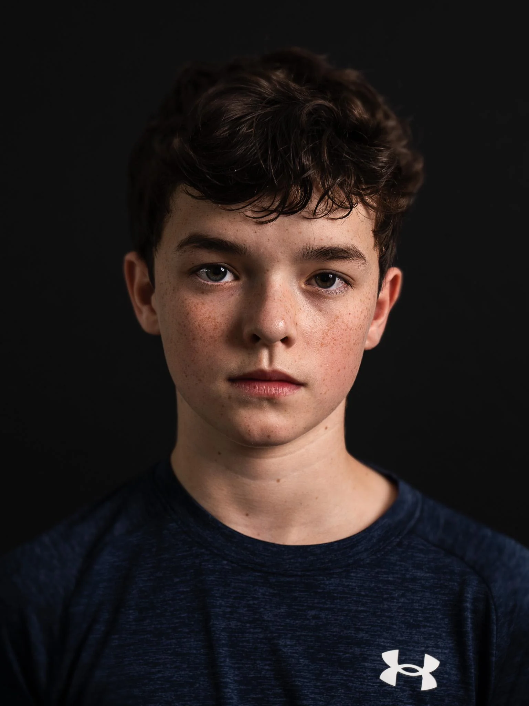
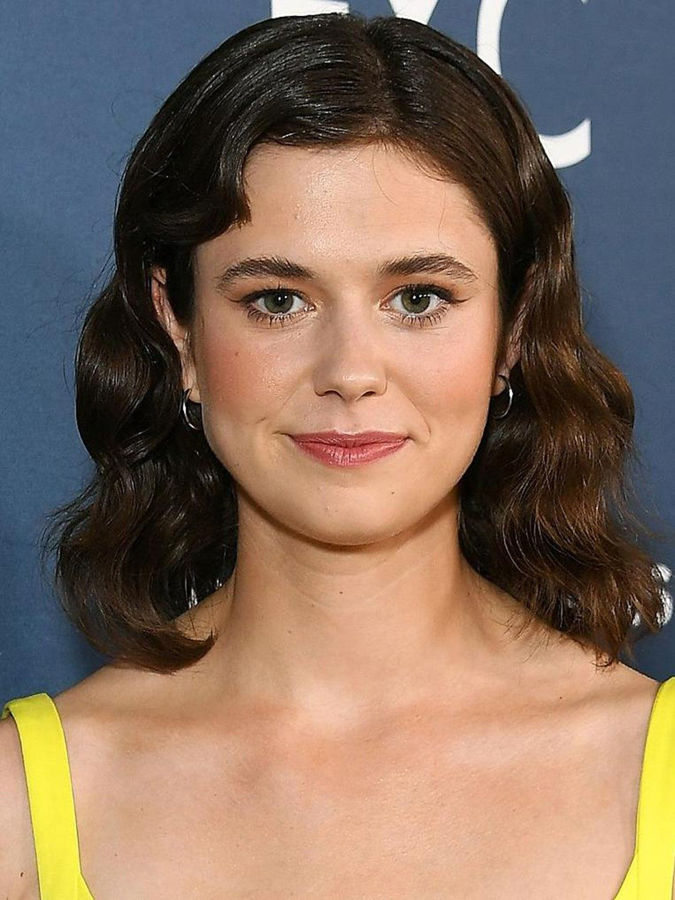
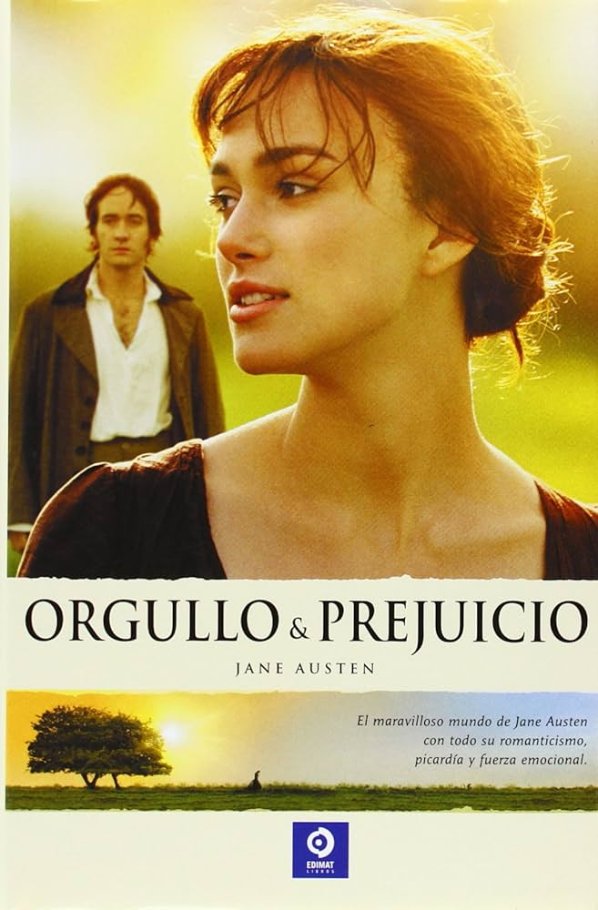
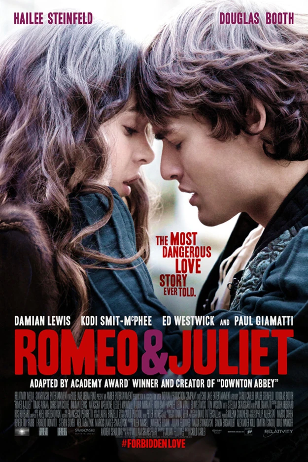
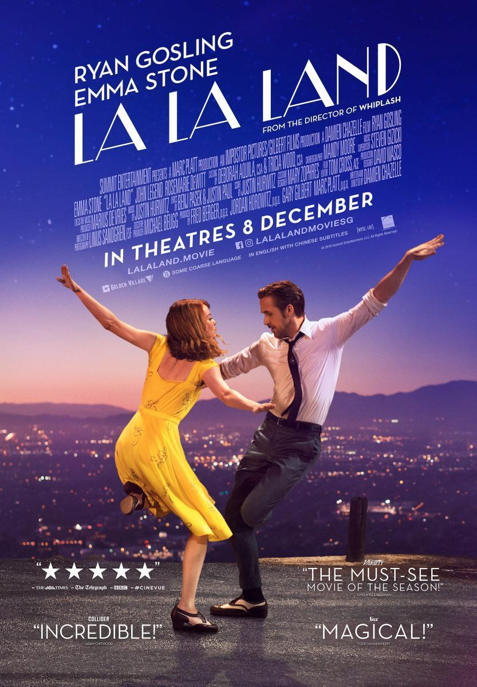
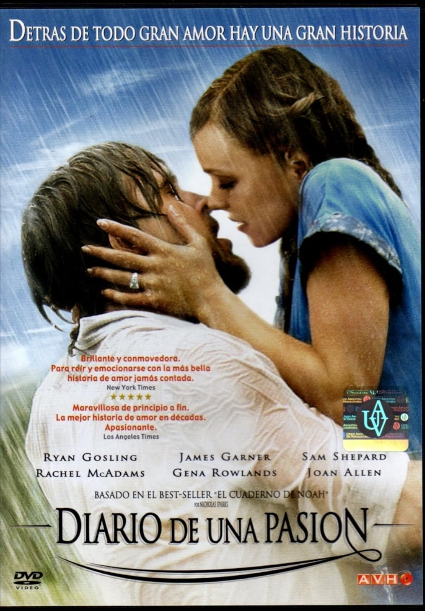

CUMBRES BORRASCOSAS
Una intensa historia de amor marcada por la obsesión, la venganza y el destino. Heathcliff y Catherine viven un romance imposible que trasciende el tiempo, enfrentando diferencias sociales y decisiones que cambiarán sus vidas para siempre.
- Género: ROMANCE
- Año: 2024
- Duración: 2h 10min
- Director: Emerald Fennell
- Productores/as: Margot Robbie, Tom Ackerley
- Calificación general: 7.5/10
- Clasificación por edad: +13
- Plataformas: Netflix y Prime Video
Tráiler
REPARTO
MARGOT ROBBIE
JACOB ELORDI

OWEN COOPER

ALISON OLIVER
EWAN MITCHELL
RESEÑAS DESTACADAS
Calificación: 7.0 / 10

RomanceLover dice:
Hermosa, pero vacía.
"Visualmente, Cumbres Borrascosas es una película impresionante. Los paisajes, la fotografía y el vestuario están cuidados al detalle, pero todo ese esfuerzo visual no logra compensar una historia que se siente distante. Nunca terminé de conectar con los personajes ni con sus conflictos. Hay momentos emotivos, pero la mayoría pasan demasiado rápido para dejar una verdadera huella. No es una mala película, pero esperaba mucho más de una historia tan reconocida."
Calificación: 4.0 / 10
CineDrama dice:
Una adaptación discutible.
"Conozco la novela original y sentí que esta adaptación simplifica demasiado varios aspectos importantes de la historia. Los personajes conservan sus nombres y parte de su esencia, pero muchas de sus motivaciones parecen apresuradas o poco desarrolladas. Las actuaciones son correctas y el apartado técnico es excelente, aunque el resultado final se siente más como una reinterpretación moderna que como una adaptación fiel. Puede gustar a quienes no conocen la obra, pero deja sensaciones encontradas."
Calificación: 10 / 10
CineDrama dice:
Me atrapó de principio a fin.
"Entré al cine sin grandes expectativas y terminé disfrutando muchísimo la experiencia. La relación entre los protagonistas logra transmitir intensidad y pasión, mientras que la ambientación ayuda a crear una atmósfera melancólica muy efectiva. Algunas escenas podrían haberse desarrollado mejor, pero en general la película mantiene un buen ritmo y consigue emocionar. No será perfecta, pero me pareció una de las propuestas románticas más interesantes de los últimos años."
Calificación: 5.0 / 10
CineDrama dice:
Demasiado lenta para mi gusto.
"Reconozco el enorme trabajo detrás de la producción, pero la película nunca consiguió mantener mi interés. El ritmo es extremadamente pausado y muchas escenas parecen alargarse más de lo necesario. Los actores cumplen con su trabajo, aunque los personajes no tienen suficiente desarrollo como para que me importara realmente lo que les ocurría. Tiene momentos visualmente hermosos, pero la historia tarda demasiado en avanzar."
Calificación: 9.0 / 10
CineDrama dice:
Una experiencia emocional.
"Lo que más me sorprendió de Cumbres Borrascosas fue su capacidad para transmitir emociones complejas sin depender únicamente de los diálogos. La tensión entre los personajes está muy bien construida y varias escenas permanecieron en mi mente después de terminar la película. Hay algunos problemas de ritmo y ciertas decisiones narrativas discutibles, pero en conjunto me pareció una obra intensa y memorable que vale la pena ver."
RELACIONADOS

ORGULLO Y PREJUICIO
Calificación: 7.8/10
DURACION: 2h 09min

ROMEO Y JULIETA
Calificación: 7.5/10
DURACION: 2h 00min

LA LA LAND
Calificación: 8.0/10
DURACION: 2h 08min
TITANIC
Calificación: 8.4/10
DURACION: 3h 14min
